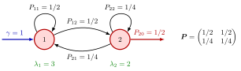

Routing Matrix¶
Definition¶
In a network of stations , Markov routing means that a job finishing service at station moves to station with a probability that does not depend on anything else: not on the job's earlier route, its service times, or the state of the network. The matrix is the routing matrix, with row for the station a job leaves and column for the station it goes to next. The exit probability
is the probability that a job leaves the network after service at station . Hence every row of has non-negative entries and sums to at most ; diagonal entries model jobs that return to the same station.
Interpretation¶
The routing matrix records where jobs go, separately from how long they take (the service times) and where they come from (the external arrival rates ). Each row is a conditional probability distribution of the next destination, given the station just left, with the missing mass assigned to leaving.

Each arrow in the figure is one entry of from Example 1. The arrows leaving station 1 carry , so row 1 sums to and nobody leaves from station 1. Station 2 sends back to station 1, to itself, and the remaining out of the network, so row 2 sums to . The green values and are the resulting total arrival rates.
Whatever the service-time distributions, the jobs sent from station to station form a stream of rate ; in the notes' setting of Poisson streams this is a thinned Poisson process (Poisson splitting). Station receives the merge of these streams and its external input. This bookkeeping gives the traffic equations , or with row vectors and the matrix product. They have a sensible solution only if every job eventually leaves: if the rows of the stations it can reach all sum to , jobs circulate for ever and the rates blow up (Example 3).
A common slip is the orientation. Rows sum to at most , not columns, and the inflow to station uses column , .
Key Results¶
- and for every , with exit probability .
- Flow on an arc: jobs move from station to station at rate , and leave the network from station at rate .
- Traffic equations (7.3.1): , that is, (Traffic Equations); in a stable network the total departure rate equals .
- Visit ratios: is the mean number of visits per job to station (Visit Ratio).
- Tandem line: for and (Tandem Queue); this satisfies , because every job has left after steps (Exercise 7.4.1, optional reading).
- Closed networks: no job leaves, so every row sums to (Closed Queueing Network).
Examples¶
1. Feedback at two stations (Exercise 7.3.3). Jobs enter at station 1 at rate . From station 1 a fraction returns to station 1 and the rest goes to station 2; from station 2 a fraction goes to station 1, returns to station 2, and the rest leaves. So
The notes' solution and checks out: and . Jobs leave at rate , as they must, and an average job visits station 1 three times and station 2 twice.
2. A three-station line with inspection. Jobs pass machine 1, machine 2 and an inspection station 3; after inspection are sent back to machine 2 for rework and the rest leave. Then , , , and all other entries are . With external rate , the traffic equations give and , so : rework raises the load on machine 2 and on inspection by about .
3. When no job can leave. In Example 1, change station 2 so that it never lets jobs go: and . Now both rows of sum to , and the formula has denominator . Indeed, adding the two traffic equations gives , impossible for : jobs keep entering but never exit. Likewise, as in Example 1, explodes.
Prerequisites¶
Related Concepts¶
- Traffic Equations
- Open Queueing Network
- Closed Queueing Network
- Visit Ratio
- Jackson Product Form
- Poisson Merging
- Markov Chain
Sources¶
- Stochastic Operations Research · Week 7
- N. D. van Foreest, Sample Path Analysis and Simulation of Stochastic Systems, Section 7.3
Aliases: Markov routing, routing probabilities, substochastic routing matrix Keywords: P_{ij}, P_{i0} = 1 - \sum_{j} P_{ij}, exit probability, \lambda = \gamma + \lambda P, feedback, rework loop, open network Symbols: alpha, beta, element of, gamma, lambda, sum
Last updated: 29 October 2026 20:42
Routing MatrixClosed Queueing NetworkOpen Queueing NetworkTraffic EquationsVisit RatioTandem QueueConditional ProbabilityMatrix ProductPoisson SplittingJackson Product FormPoisson MergingMarkov Chain